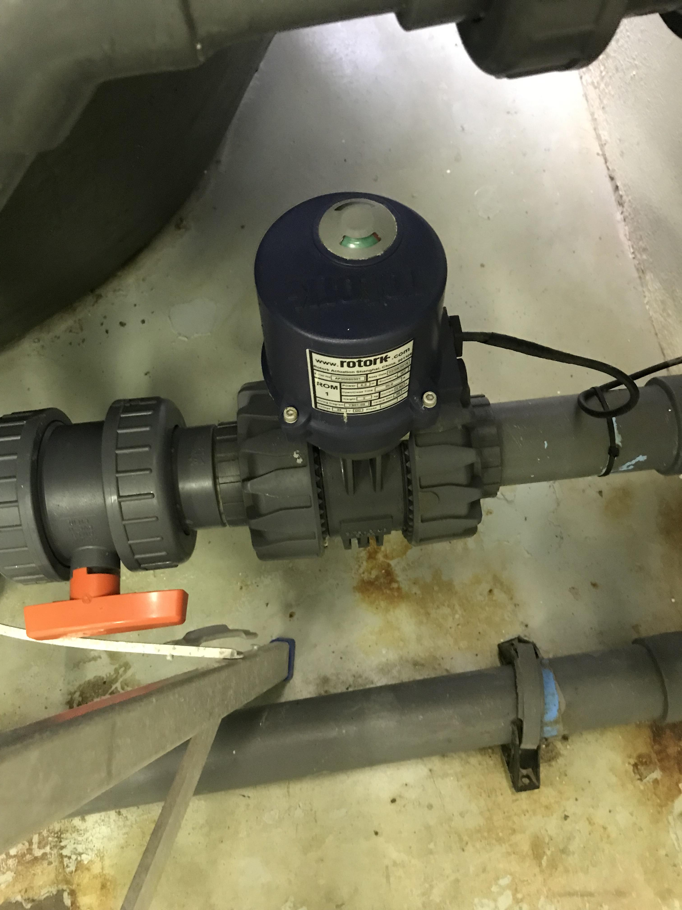

2 Dissolved Air Flotation (DAF) Tank
The DAF tank can be found on the Aquarium’s ground floor, behind the main “staff only” access point (Figure 2.1).
It has one drain valve and an electric actuator valve in series with the DAF outlet valve, along the outside of the main tank (Figure 2.2). The inside of the tank consists of a smaller central DAF column that houses a nozzle manifold connected to the saturated water inlet pipe.

2.1 Maintenance
The maintenance procedure described for the DAF tank should be completed once every year.
2.1.1 Tool preparation
Most of the tools can be found inside the workshop (room 162).
These include:
- 1 x monkey wrench
- 1 x long hose pipe (50mm diameter)
- 1 x Ladder (approximately 1.8m long)
- 1 x long stick (approximately 2.2m long)
- 2 x Fish scoop nets
- 1 x Bucket
To conduct annual maintenance, the DAF tank has to be drained completely.
2.1.2 Drain DAF
- Steps 1-6 will be completed inside the plant room.
- Close Dump valve No. 18 (Figure 2.3 (a)).
- Wait for the water level at the Prosonic HMU 860 to reach 90% (Figure 2.3 (b)).
- Done to ensure enough sea water remains in circulation during the maintenance procedure.
- Switch off the Jetty pump on the Main control switchboard (Figure 2.3 (c)).
- Prevents more water intake.

- Switch off the Saturator pump.
- Clipsal power outlet No. 2 (Figure 2.4 (b)).
- Close the Saturator isolating valve No. 36 (Figure 2.4 (c)).
- Feeds the Saturator system.
- Close the Saturator discharge valve (No. 42) to the DAF tank (Figure 2.4 (d)).
- Steps 3 - 6 prevent water flow into the DAF unit during the maintenance procedure.
- Open DAF drain valve (No. 43).
- Allow DAF to drain completely.
- Some water still remains in central DAF column after draining.
2.1.3 Inspect Nozzle manifold and associated parts
This is a job for a minimum of 2 people.
- Uncouple the Nozzle manifold from the Saturated water inlet pipe.
- Use a monkey wrench.
- Pull Nozzle manifold out of central DAF column for further inspection.
- Note any missing parts and biofouling.
- Allow pungent fumes emitted by the sludge build up to clear overnight if necessary.
- Prolonged inhalation of concentrated methane gas can result in loss of consciousness.
- Might not need to wait overnight, can estimate time needed by strength of smell emitted on the day.
- Skip steps 12-16 if maintenance work will resume on the same day.
- Turn on Jetty pump.
- Close DAF drain valve No. 43 (Figure 2.2).
- Fill a 1/4 of the DAF tank up with sea water.
- In steps 12-14, water is left in the tank to stop the sludge from drying up overnight and adding on to the time required to clean up.
- Turn off the Jetty pump (Figure 2.3 (c)).
- Before resuming maintenance work the next day, open the DAF drain valve and let the water drain out (Figure 2.2).
- Lower ladder into DAF, rest against central column and climb in.
- Person climbing in should be small enough to fit through the top of the DAF tank.
- Siphon water out of the central DAF column and into the main DAF tank, where it will discharge via valve No. 43.
- Use a 50mm diameter hose.
- Lower hose into water, create vacuum inside the hose and keep outlet at lower level than inlet to generate flow out of central column.
- Skip step 19 if none of the Nozzles or Nozzle parts are lost.
- Retrieve missing Nozzle parts from central DAF column (Figure 2.5).
- Use Fish scoop net and bucket.
- May have to scoop out some sludge first to get to the missing parts.
- Using the fish scoop net, discard (into bucket) any remaining sludge.
- Dismantle and clean the Nozzle manifold, Nozzle heads and any accompanying parts (Figure 2.5).
- Should be able to separate the two small, circular plates found within the Nozzles.
- Both have a single hole along their periphery. One smaller than the other.
- Inspect Nozzle parts for damage.
- Take note of damage, if any, and proceed to next step.
- Re-assemble respective parts from step 21.
- Place the plate with the larger hole on top of the other, facing the opposite direction before inserting it into the Nozzle head.
If there are obvious signs of damage to the nozzles, they will have to be replaced with new ones as soon as possible. Likely contact for new Nozzles is Mr. Jan Marais at Aqua services and engineering.
2.1.4 Clean tank
- Turn on Jetty pump (Figure 2.3 (c)).
- Close DAF drain valve No. 43 (Figure 2.2).
- Fill a 1/4 of the DAF tank with sea water.
- Turn off the Jetty pump.
- Connect long hose pipe (16mm diameter) to a water tap.
- Fasten long stick (approx. 2.2m length and 40mm diameter) to the opposite end of the hose pipe with cable ties.
- Lower pipe into the DAF tank and open tap.
- Use the water flow from the pipe to help agitate and thoroughly mix the sludge with the standing water.
- Open the DAF drain valve and let the water-sludge mix drain out.
- Continue mixing the sludge during draining.
- Fill a 1/4 of the DAF tank up and repeat if sludge not adequately cleared.
- Climb out and remove the ladder.
- Connect Nozzle manifold to the Saturated water inlet pipe.
2.1.5 Resume normal operation
Only resume normal system operation if there is no excess sludge build-up at the bottom of the DAF tank
- Switch on Jetty pump (Figure 2.3 (c)).
- Close DAF drain valve No. 43.
- Wait for DAF tank to fill up.
- Lasts more than 30 minutes.
- Open Main dump valve No. 18 (Figure 2.3 (a)).
- Open Saturator isolating valve No. 36 (Figure 2.4 (c)).
- Switch on Saturator pump (Figure 2.4 (b)).
- Open Saturator discharge valve No. 42 (Figure 2.4 (d)).
2.2 Repairs
Under normal circumstances the Dissolved oxygen flotation (DAF) tank acts as an initial filter in the Aquarium system, removing oils, grease and any other suspended solids from the raw sea water intake. This is achieved in conjunction with flocculant from the flocculant column (Figure 2.1) and micro air bubbles, supplied via nozzles from the saturator column (Figure 2.4 (a)) that are discharged at the base of a smaller, central DAF column within the main DAF tank. Flocculant coagulates the suspended material, which is then surrounded and lifted by the micro-bubbles, before being skimmed off the top and discharged through the waste outlet.
When the DAF performs sub-optimally, unfiltered, raw sea water containing substances such as oils and heavy metals may enter the Aquarium system. This can severely impair the display animals’ health, possibly leading to increased mortality rates. Consequently, the DAF systems’ performance should not be compromised for prolonged periods.
2.2.1 Problem diagnosis
Excess bubbling/large bubble formation was identified at the top of the DAF by Mr. Botes after a routine inspection round. Further consultation with Mr. Jan Marais, from Aqua Services and Engineering, narrowed the problem down to a likely issue with the nozzles.
2.2.2 Tool preparation
The tools used in Section 2.1.1 were also used here.
2.2.3 Nozzle inspection
To inspect the nozzles, the DAF unit had to be drained of all liquid.
Drain DAF
- Steps 1-6 will be completed inside the plant room.
- Close Dump valve No. 18 (Figure 2.3 (a)).
- Wait for the water level at the Prosonic HMU 860 to reach 90% (Figure 2.3 (b)).
- Done to ensure enough sea water remains in circulation during the maintenance procedure.
- Switch off the Jetty pump on the main control switchboard (Figure 2.3 (c)).
- Prevents more water intake.
- Switch off the Saturator pump.
- Clipsal power outlet No. 2 (Figure 2.4 (b)).
- Close the Saturator isolating valve No. 36 (Figure 2.4 (c)).
- Feeds the Saturator system.
- Close the Saturator discharge valve (No. 42) to the DAF tank (Figure 2.4 (d)).
- Steps 3 - 6 prevent water flow into the DAF unit during the maintenance procedure.
- Opened DAF drain valve No. 43 (Figure 2.2).
- Allowed DAF to drain completely.
- Some water still remained in central DAF column after draining
Once completely drained, excess sludge could be seen accumulated at the bottom of the DAF tank
Extract Nozzle manifold and associated parts
This is a job for a minimum of 2 people
- Uncoupled the Nozzle manifold from the Saturated water inlet pipe.
- Used a monkey wrench.
- Pulled Nozzle manifold out of central DAF column for further inspection.
- One of three Nozzle heads was missing and there was some blockage around the Nozzle outlets due to biofouling.
- Allowed pungent fumes emitted by the sludge build up to clear overnight.
- Prolonged inhalation of concentrated methane gas can result in loss of consciousness.
- Lowered ladder into DAF tank, against central column and climbed in.
- Person climbing in should be small enough to fit through the top of the DAF tank.
- Siphoned water out of the central DAF column and into the main DAF tank, where it was discharged via valve No. 43 (Figure 2.2).
- Used a 50mm diameter hose.
- Lowered hose into water, created a vacuum inside the hose and kept outlet at lower level than inlet to generate flow out of central column.
- Retrieved missing Nozzle parts from central DAF column (Figure 2.5).
- Used Fish scoop net and bucket.
- Had to scoop out some sludge first to get to the lost parts.
- Used the fish scoop net to discard (into bucket) any remaining sludge after retrieving the lost Nozzle parts.
- Removed ladder.
- Dismantled and cleaned the Nozzle manifold, Nozzle heads and any accompanying parts.
- Found two, small circular plates within the Nozzles (Figure 2.5).
- Both had a single hole along their periphery. One smaller than the other.
- Inspected the Nozzle parts for damage.
- Parts were not damaged.
- Re-assembled respective parts from step 17.
- Placed the plate with the larger hole on top of the other, facing the opposite direction before inserting it into the Nozzle head.
- Connected the Nozzle manifold to the Saturated water inlet pipe.
In case of damage to Nozzle parts, contact Mr. Jan Marais, at Aqua services and engineering, for new Nozzles.
Resume normal operation
Once all sludge has been removed (see Section 2.1 for clean up procedure) normal system operation can be started.
- Switch on Jetty pump (Figure 2.3 (c)).
- Close DAF drain valve No. 43 (Figure 2.2).
- Wait for DAF tank to fill up.
- Lasts more than 30 minutes.
- Open main dump valve No. 18 (Figure 2.3 (a)).
- Open Saturator isolating valve No. 36 (Figure 2.4 (c)).
- Switch on Saturator pump (Figure 2.4 (b)).
- Open Saturator discharge valve No. 42 (Figure 2.4 (d)).